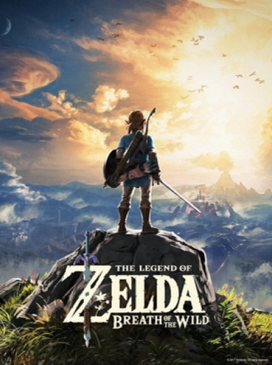

Adventure · 2017
Breath of the Wild
Systemic chemistry over quest markers; climbing anything changed everything.

Cover: Wikipedia: The Legend of Zelda: Breath of the Wild
Facts
- Released
- 2017-03-03
- Genre
- Action-Adventure
- Category
- Adventure
- Platforms
- Nintendo
- Developers
- Monolith Soft Inc., Nintendo Entertainment Planning & Development
- Publishers
- Nintendo